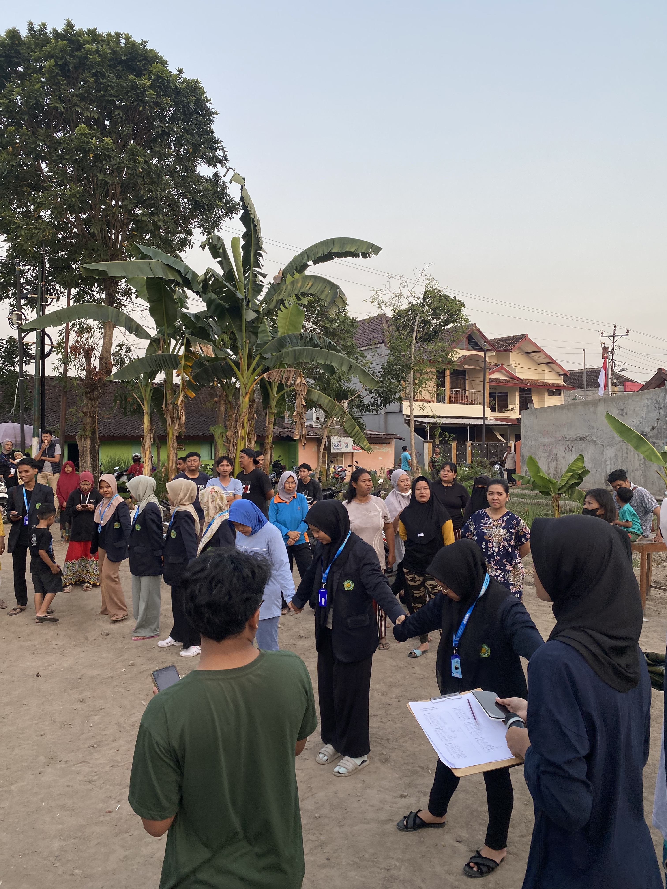
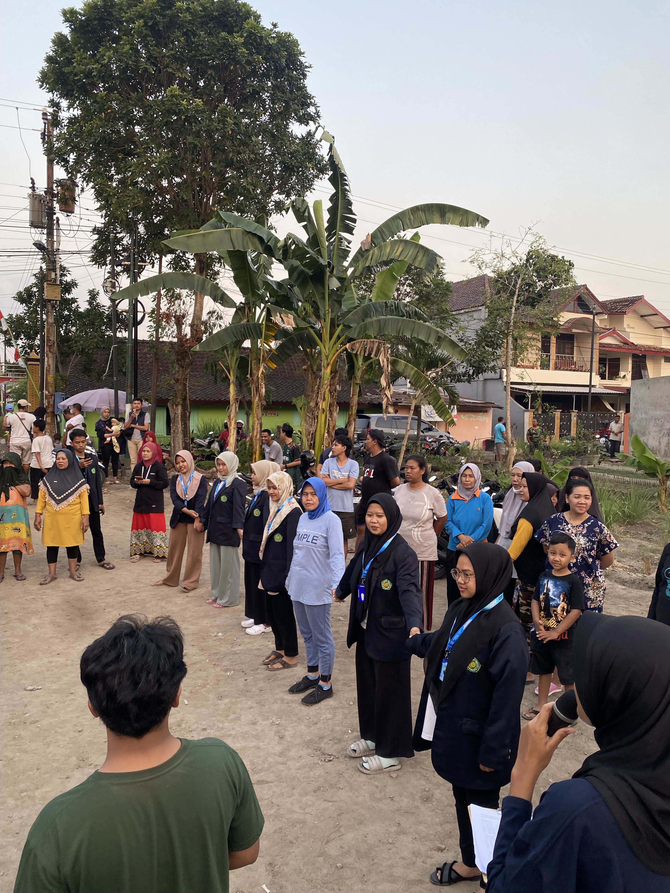
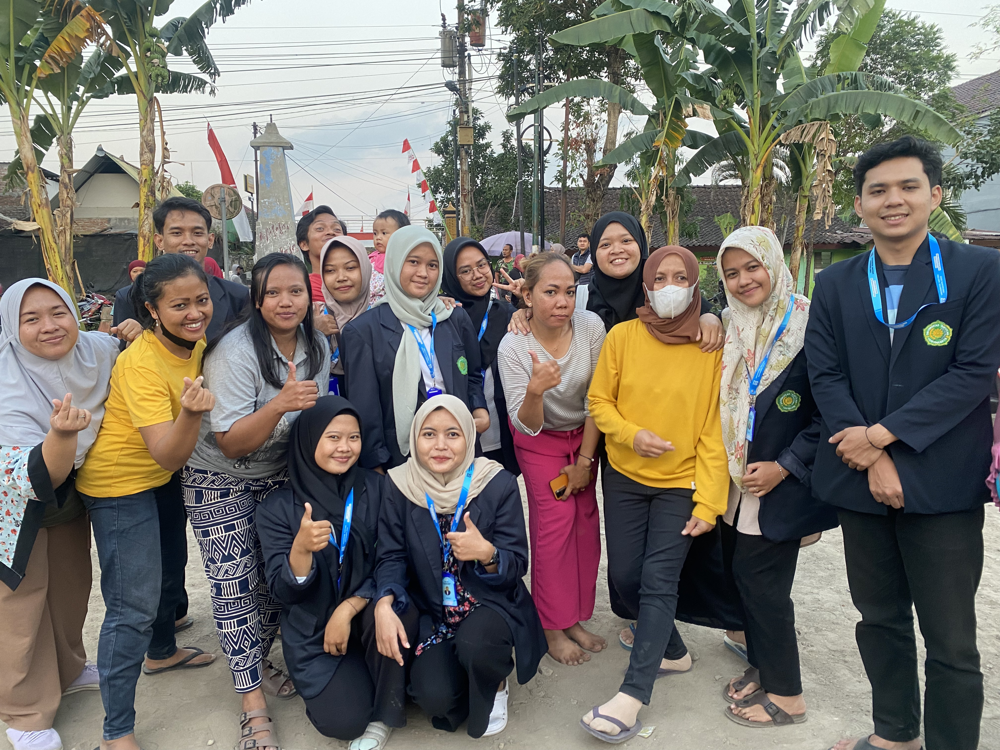
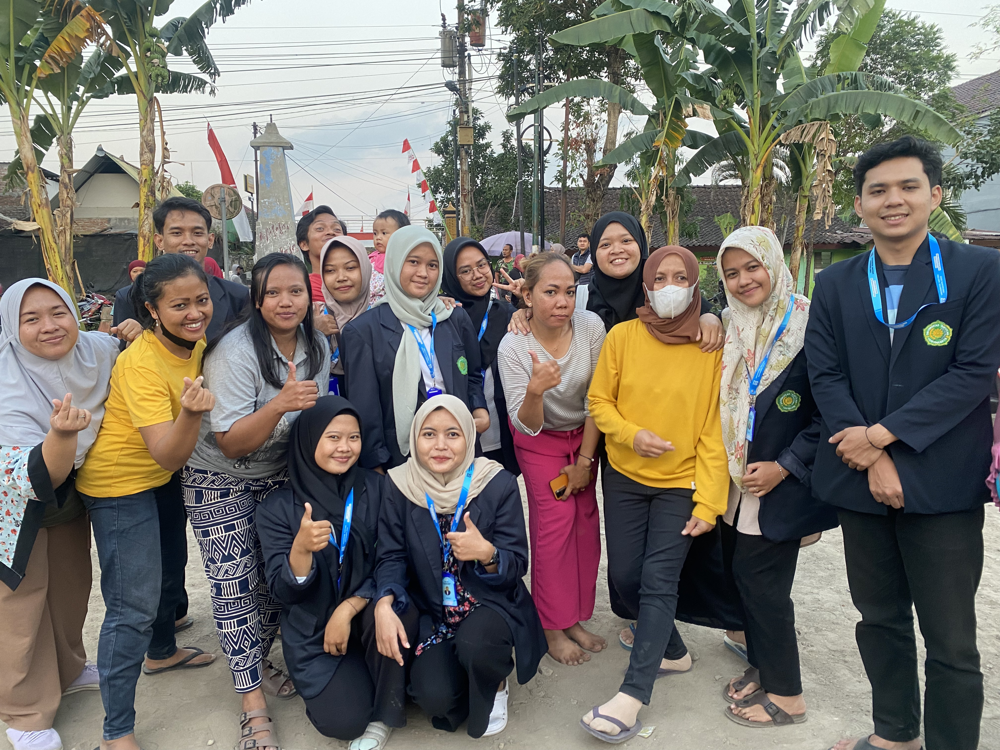

Kegiatan Lomba 17 Agustus di RW.06 Pandeyan
PANDEYAN, KEC. UMBULHARJO, KOTA YOGYAKARTA, DIY
Masyarakat Indonesia akan merayakan kemerdekaan RI pada 17 agustus 2023. Selain upacara hari kemerdekan, Masyarakat pandeyan mengadakan lomba 17 agustusan yang diadakan oleh pemuda dan pemudi karang taruna RW 06 Pandeyan. Lomba 17-an ini beraneka ragam. Mulai dari perlombaan anak – anak, bapak – bapak dan ibu – ibu. Beragam hadiah unik dan menarik pun banyak dijumpai mulai dari peralatan sekolah, peralatan dapur dan barang – barang elektronik.
Sebagai ungkapan kegembiraan masyarakat atas kemerdekaan RI ke-78 yang diraih oleh para pejuang beragam lomba seperti, lomba mewaarnai anak – anak, lomba makan kerupuk, lomba volly ibu – ibu, lomba volly bapak – bapak, lomba volly remaja/pemuda, lomba estafet sarung, lomba nangkep bebek, lomba tangkap koin, dll.
Menurut warga, hal tersebut tidak lepas dari fungsi perayan lomba 17an yang berisi ingatan kolektif rakyat mengenai kemerdekaan Indonesia di masa lalu. Jadi lomba – lomba itu tidak bebas nilai tetapi punya makna sejarahnya, meski sekedar hiburan tetapi merekam memori kolektif.
DOKUMENTASI
  
